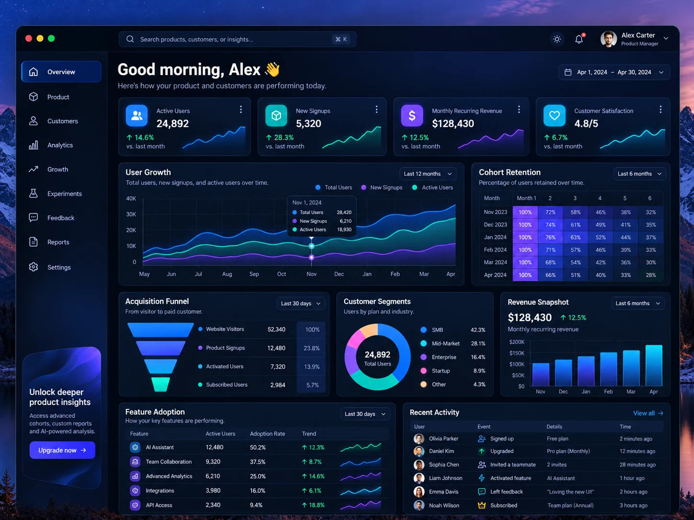
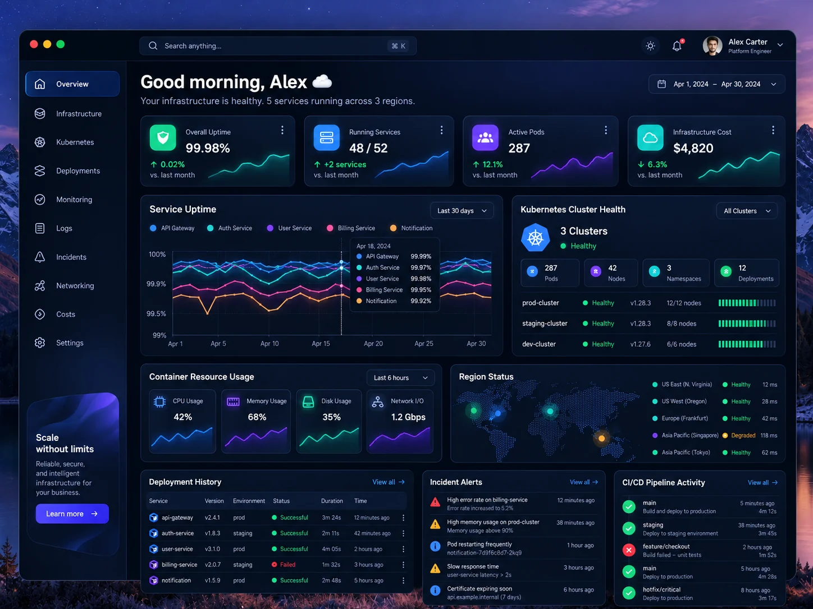

atelier.SHOP ABOUT ◯
Objects for
slow living.
slow living.
01 / COMMERCE EXPERIENCE
Try the demo ↗Atelier Storefront
A responsive shop with real product filtering, search, and a functioning cart.
I build software end to end—thoughtful frontend experiences, dependable backend services, and the automation that makes shipping repeatable.
Four original, interactive project demos, plus a runnable Go API reference. Explore the behavior, code, and delivery concepts—not just screenshots.
A responsive shop with real product filtering, search, and a functioning cart.

An interactive metrics view with time-range controls and exportable sample data.
A live landing-page editor with theme, content, and layout controls.

A browser-based CI/CD workflow simulator exploring build gates, deployments, rollbacks, and service health. Includes a separate runnable Go API code sample.
Good software connects the interface people use, the services they rely on, and the delivery process that keeps both dependable.
Responsive React and TypeScript interfaces, clear application state, accessibility, performance, and thoughtful integration with design systems.
Service boundaries, REST APIs, SQL data models, authentication flows, observability, and pragmatic integration with existing systems.
Containerized development, CI/CD automation, release checks, cloud environments, and production-aware troubleshooting from first commit onward.
Architecture is more than a diagram. Here is a reference flow for how frontend, backend, and delivery pieces fit together, with a small Go service you can inspect and run locally.
Readable Go source, automated tests, a Dockerfile, and a GitHub Actions example are included in this download. It runs separately from the static site.
I'm Jorge, a Florida-based senior software engineer with a consulting background spanning frontend applications, backend integrations, and delivery operations. I care about understandable architecture, clear technical decisions, and software that remains maintainable after launch.
Get to know me ↗Whether you need a polished product UI, dependable APIs, or a clearer path from code to deployment, I'd love to talk.